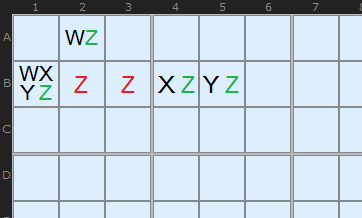
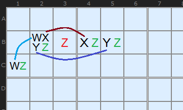
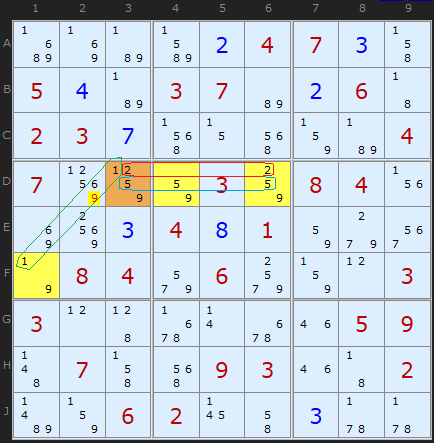
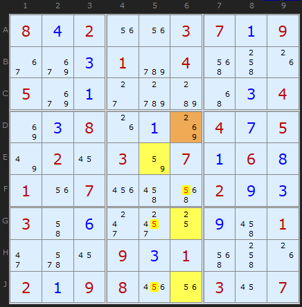
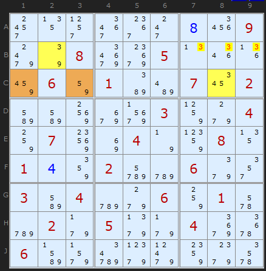
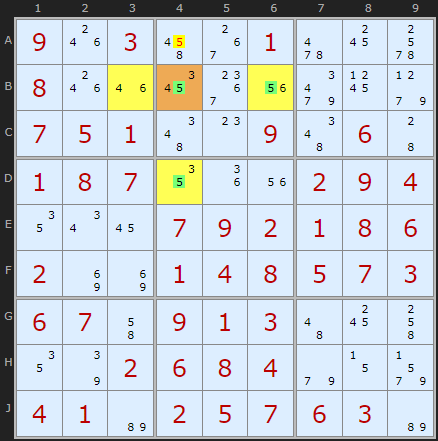
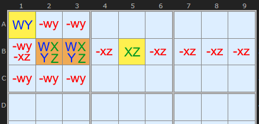
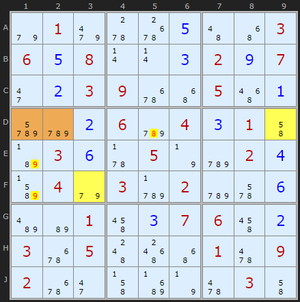
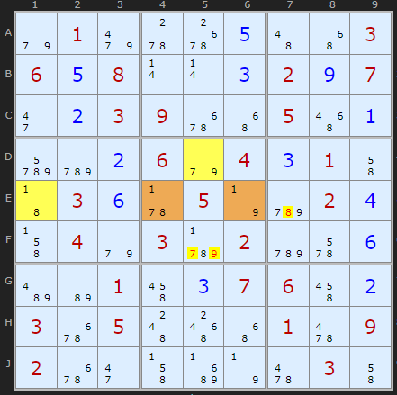

SudokuWiki.org
Strategies for Popular Number Puzzles
WXYZ-Wing
This is an extension of XYZ-Wing that uses four cells instead of three. A.k.a. Bent Quads.
I am grateful to SudoNova posting below and StrmCkr who posted about this strategy way back when on this page. I only got round to appreciating the insights recently but the much expanded version of WXYZ is now in version 1.96+ of the solver. Previously I'd restricted the scope to a very narrow definition. Using one of my test libraries, the 50k set from Ruud, I increased the detection from 299 instances to 8313, so it is definitely worth looking out for.
I'm going to start with my narrow definition if only to show how this is an extension of the three-cell XYZ-Wing.
I am grateful to SudoNova posting below and StrmCkr who posted about this strategy way back when on this page. I only got round to appreciating the insights recently but the much expanded version of WXYZ is now in version 1.96+ of the solver. Previously I'd restricted the scope to a very narrow definition. Using one of my test libraries, the 50k set from Ruud, I increased the detection from 299 instances to 8313, so it is definitely worth looking out for.
I'm going to start with my narrow definition if only to show how this is an extension of the three-cell XYZ-Wing.
Type 1

The easy principle is that each possible value of the hinge cell results in a Z value in one of the cells in the WXYZ-Wing pattern, thus leaving no room for a Z on any cell all four can 'see'.
That is the narrow definition and a glance at XYZ Wing will show you its the same idea plus one more cell. You could expand it to a five cell pattern and five numbers.
Now, lets consider StrmCkr's more general definition:
WXYZ-Wings can be considered as a group of 4 cells and 4 digits, restricted to exactly two units, that has exactly one non-restricted common digit. We use that digit (Z) to eliminate since at least one of Z will be the solution.

Well, a restricted digit is one where all the instances of candidate N in the pattern can see each other. On the diagram to the left I have connected the W candidates - because they share the same box, and I can connect the Xs and Ys as they share a row. Only Z is non-restricted because some of the Zs - ie the one in C1 CANNOT see the Zs in B4 and B5.

In the first example I show a classic WYXZ wing - in that it has all four candidates (1/2/5/9) in the hinge cell D3 marked in brown. The three outlier cells, marked in yellow each contain a 9 (our Z) plus some of the other four candidates.
I have also marked in rings the spread of candidates 1, 2 and 5. You will see that both 1s can 'see' each other because they are in the same box. The 2s can 'see' each other because they are on the same row and the three 5s can all see each other since they share the same row as well. That makes 1, 2 and 5 restricted in the four cell pattern.
Candidate 9 is different. At least one 9 (in F1) cannot see at least one other 9 - the 9s in D4 and D6. That makes it the only non-restricted candidate.
A Type 1 WXYZ elimination will always be made on the non-restricted candidate. We are looking for a 9 elsewhere that can see every 9 in the four cells of our WXYZ pattern. That 9 is on D2.
It is important to note is that StrmCkr's rule says nothing about the hinge requiring four candidates and the other cells two. Like Quads, we need in total four candidates in four cells. This is a four-cell Locked Set. StrmCkr makes this point in his second corollary, So lets look at some examples where the is a thinner spread of four candidates.
Interestingly, where Z is present in less than four cells, ie three or just two cells of the four - more eliminations are possible because there are less cells that the eliminated candidates need to 'see'. I believe my new implementation WXYZ gives more variants than the 10 StrmCkr lists as exemplars.
It is important to note is that StrmCkr's rule says nothing about the hinge requiring four candidates and the other cells two. Like Quads, we need in total four candidates in four cells. This is a four-cell Locked Set. StrmCkr makes this point in his second corollary, So lets look at some examples where the is a thinner spread of four candidates.
Interestingly, where Z is present in less than four cells, ie three or just two cells of the four - more eliminations are possible because there are less cells that the eliminated candidates need to 'see'. I believe my new implementation WXYZ gives more variants than the 10 StrmCkr lists as exemplars.

The second WXYZ example is orientated in columns rather than rows, but works the same. The hinge cell in D6 conspicuously fails to contain the non-restricted candidate 5, but no matter. Whatever the final solution of D6 a 5 is forced into either E5 or one of the two cells G6/J6. The outliers are nice easy pairs - like my original narrow definition, but the improvement is not needing 5 (Z) in the hinge every time.
The solver tells us
WXYZ Wing
The four cells {D6,E5,G6,J6} contain in total 2/5/6/9.
Candidate 5 determines the 'wing' cells (in yellow) and one or other of those 5s must be true. Therefore...
5 can be taken off F6
5 can be taken off G5
5 can be taken off J5

Here is an example where the non-restricted common digit is present in just two pincer cells. We don't have to worry about 3s 'seeing' the brown cells as they don't have a 3 in them. Consider how the hinge cell in C1 solves when each digit is looked at. Suppose C1 is 4. That makes C8 contain 3/5. C8 + C3 + B2 now becomes an Y-Wing - and eliminates 3s in the same way. Interesting!
The solver returns
WXYZ Wing
The four cells {C1,B2,C8,C3} contain in total 3/4/5/9.
Candidate 3 determines the 'wing' cells (in yellow) and one or other of those 3s must be true. Therefore...
3 can be taken off B7
3 can be taken off B8
3 can be taken off B9
Update August 2025

From a puzzle on my own document pages he found this example. The non-restricted candidate 5 is present in the hinge B4 and in the two wing cells B6 and D4 - which importantly cannot see each other. This example also shows it is not essential that all wing cells contain 5 as B3 does not. We can remove the 5 in A4 as it can see all 5s in the pattern.
If you "Take Step" past the next Pointing Pair there is a very similar WXYZ-Wing with the same features.
Type 2
I am very grateful to David Hollenberg again for providing a detailed argument for a more expansive WXYZ-Wing pattern which I have included in the solver from version 2.31 (February 10th 2025). I am going with his suggestion to call it Type 2. Looking through my past emails I see Ed Logg from California also recommended this pattern back in 2020. I'm also going to have to pick through the page comments to see who else thought of this and check for other variants.
In one way this pattern is simpler to state and define that Type 1 which talks about finding one non-restricted candidate.
In one way this pattern is simpler to state and define that Type 1 which talks about finding one non-restricted candidate.

Now, if there are two other cells that cannot see each other and contain two each of the four in the WXYZ and one is in the same box and the other is elsewhere along the row (or column), we can make multiple eliminations in many places.
Shown in the diagram is the fact that candidates XZ in the row eliminates everywhere else in the row. And Candidates WY can eliminate in the rest of the box where the hinge is.

Cells D12 contain {5,7,8,9} between them both. These cells can see D9 (the XZ cell) which contains {5,8} and F3 which contains {7,9}. So 8 can be taken off D5, 9 can be taken off E1 and 9 can be taken off F1.
So what about all that 'non-restricted candidate' stuff? In this pattern all the common
digits are restricted. As David reports "every candidate in a cell that is outside a Type 2 and that can see the occurrences of its digit in the WXYZ Wing can be eliminated"
In the second example we'll reason through a proof.

In this puzzle all the WXYZ digits {1,7,8,9} are restricted (i.e., all occurrences of each digit occur only in the same row, the same column, or the same box).
So all the 1 values in the wing can see each other and the same is true for the 7 values, 8 values, and 9 values. Now take a cell outside the WXYZ Wing, for example F5 that has 9 as a possible candidate. Let's assume that 9 is the solution for that cell. Since it can see all of the 9 values in the wing (D5 and E6), they would be eliminated.
We would then have a wing with 4 cells but only 3 possible candidates (1, 7, and 8). So by
the Pigeonhole Principal one of these digits must appear in more than one cell of the wing.
But this is impossible, since each digit is restricted so we would have (for example) two 1 values in the same row, column or box. So our original assumption that 9 is the solution for the cell outside the wing must be wrong and it can be eliminated as a candidate in that cell.
How common is Type 2 compared to Type 1?
I've only tested this on about 300 puzzles known to have an WXYZ-wing and it found 58 type 2s and 675 Type 1, so about 8%. And this was with checking for Type 2 first.
Comments
Email addresses are never displayed, but they are required to confirm your comments. When you enter your name and email address, you'll be sent a link to confirm your comment. Line breaks and paragraphs are automatically converted - no need to use <p> or <br> tags.
... by: Strmckr
xy ,xyz ,wxyz ,vwxyz ,uvwxyz ,tuvwxyz, stuvwxyz,rstuvwxyz
are found under ALS xz rules with 1 RCC { wing} or 2 RCC { rings }
classed under B.a.r.n.s {als xz}
which is specifically a collection of N cells with N digits over 2 ALS
using the Size N for the id name tag.
aside:
the counting approach i hinted at also works but also covers more
as it also tags als with > dof past size 1 as it doesn't consider the cells as ALS.
Counting methods are no longer used on the players forum as we moved to Boolean logic gates over iterative approaches.
Counting method I talked about way way back:
{wing}
a collection of N cells with N digits having: N-1 RCC {Sector based}:
so that 1 value {z} is shared by the set and can be eliminated from its collective peers
{Ring}
a collection of N cells with N cells having N RCC { sector based} : so that each RCC is restricted its respective Cells.
even my old thread mentions to use ALS -xz rules but that was missed in the Collary
Ring example:
+--------------------+---------------+----------------+
| -36 -36 -36 | . . . | . . . |
| -3678 (678) (38) | -78 -78 -78 | -78 (78) -78 |
| -36 (36) -36 | . . . | . . . |
+--------------------+---------------+----------------+
| . . . | . . . | . . . |
| . . . | . . . | . . . |
| . . . | . . . | . . . |
+--------------------+---------------+----------------+
| . . . | . . . | . . . |
| . . . | . . . | . . . |
| . . . | . . . | . . . |
+--------------------+---------------+----------------+
see my wiki for further ALS reading.
https://www.reddit.com/r/sudoku/wiki/als-terminology/
I appreciate the examples and write up on Reddit. I have been working on satisfying myself that the Wing Family sets are subsets of ALS. The main difference was until today I was not looking for the X-Wing examples in your list, but a tweak allows me to. In wondering whether it is worth getting the solver to look for VWXYZ and beyond it seems it is only beneficial to do so if the pattern is simpler than the ALS. For Y, XYZ and WXYZ (marginally) I think it is worth splitting out. But any larger, no.
For the sake of thoroughness and to make your examples more accessible I have typed them in and stated where my solver finds them and what Wing they are. The only ones I can't confirm are where a Naked Pair or Triple gets there first as my solver does not allow those to be skipped.
Note: Uncheck all other strategies to view ALS versions. Check Wing strategy to see the Wing result
From https://www.reddit.com/r/sudoku/wiki/als-terminology/
ALS XZ rule {1 RCC} examples:
Load Puzzle 1
First instance - XYZ Wing, uncheck, 1st ALS of 4
Second instance - XYZ Wing, uncheck, and 2nd ALS of 27
Load Puzzle 2
First instance - Y-Wing, uncheck, and 3rd ALS of 46
Second instance - 1st ALS of 46
Load Puzzle 3
First instance - Y-Wing, uncheck, then 1st ALS of 7
Second instance - 3rd ALS of 7
Third instance - 6th ALS of 7
Load Puzzle 4
First instance - WXYZ Wing, uncheck, then 2nd ALS of 34
Als XZ Double Link rules examples:
Load Puzzle 5
First instance - X-wing, uncheck, then 1st ALS of 2
Load Puzzle 6
First instance - ALS 15/39 but I get 3-als + 1+als first
Load Puzzle 7
First instance - X-Wing, uncheck, then 1st ALS of 5
Second instance - Inaccessible as Naked Pair gets it
Load Puzzle 8
First instance - Inaccessible as Naked Triple gets it
Puzzle 9 skipped as example is Naked Pair
Once you are comfortable with size 1,2 expand into size 3
Load Puzzle 10
First instance - WXYZ-Wing or 1/10 ALS
Second instance - 10/10 ALS
Third instance - Inaccessible as Naked Pair gets it
Load Puzzle 11
First instance - 2/8 ALS no other wing
Load Puzzle 12
First instance - Cannot find the 4-als + 1-als. Does find another unrelated
Load Puzzle 13
First instance - Cannot find exact one, do find 14 others and WXYZ-wing in nearly same position
... by: Liz A.
Set A = B4, B5, C6 {2346}
Set B = C7 {36}
The restricted common digit is 3. If any cell that can see all the 6's in both sets could B a 6, then set A would reduce to a locked pair {24} and C6 would have to be 3, forcing C7 to be 6, which contradicts the assumption that another 6 can see C7. Thus, any 6 that can see all the 6's in sets A and B can be eliminated. The only 6 that meets that criterion is the one in C5.
I think any Type 1 WXYZ wing (as well as any XYZ wing or XY wing) can be analyzed in terms of ALS's. I don't know if a Type 2 WXYZ wing can always be analyzed as a Sue de Coq, though.
they often overlap als xz with 2 RCC
there is known versions that have no als xz equivalent which proved this classification.
(Sorry, I realise this isn't about WXYZ wings... thread creep.)
... by: Liz
... by: Eric Bryant
Load https://www.sudokuwiki.org/sudoku.htm?bd=S9B5e56011a090702564e07031m0s1o080i05015g4c091b231q1i6y66010i6206030s0e5w5w4y6y026i6i091i0a5y0c6q0e5w5w01046s090i0a032k3g1o080s0e045w5u0i44050a030650054y4h4d0w07090s
Click "Take Step" 3 times and you'll reach a WXYZ Wing.
Two hinge cells highlighted orange:
B4, with candidates 24
C6, with candidates 346
Two wing cells highlighted yellow:
B5, with candidates 246
C7, with candidates 36
The solver says:
WXYZ Wing
WXYZ Wing Type 1: The four cells {C6,B4,C7,B5} contain in total 2/3/4/6.
Candidate 6 determines the 'wing' cells (in yellow) and one or other of those 6s must be true. Therefore...
6 can be taken off C5
I certainly agree with the conclusion (that 6 should be eliminated from C5) though maybe not the logic in getting there.
For example, look at C7. If it's 6, that rules out 6 @ C5. Easy enough.
If it's 3, that removes 3 from C6. The remaining 3 highlighted cells devolve into a WXY Wing, and the solution from there is straightforward.
What I don't get is:
"Candidate 6 determines the 'wing' cells (in yellow) and one or other of those 6s must be true."
What I at first assume that to mean is, one of the other of those wing cell 6s, in yellow.
In other words, if C7 is not 6, then B5 is. But I can't prove this to be the case.
Testing out the various candidates in the highlighted cells, I could place the other 6 at B5, C6, or... unknown.
And if 6 were limited to only the wing cells, then it should be removed from C6, which is not the case.
So, it appears "one or other of those 6s" refers to not just those in the wing cells, but any of the highlighted cells.
I'd consider rewording the solver's description of what's happening here for greater clarity.
In my detection I pair B4 and B4 (because they share a unit and both see hinge) and I OR their candidates. Then I AND them with the fourth cell C7 to get the non-restricted digit 6. Sometimes the pair will contain the candidate in both cells in which case they are both set to yellow. But they don't need to contain X in both. So they should both be yellow to make it clear they are a grouped wing cell.
Going to change the wording of Type 1 to
WXYZ Wing Type 1: The four cells {C6,B4,C7,B5} contain in total 2/3/4/6 with the hinge on C6.
I am convinced though that the logic is correct. Also – we only know a) one or other or both 6 is in B5 and/or C7 or b) 6 is in C6. It doesn't help that several of the example no longer find an WXYZ-Wing even with certain newer strategies turned off, so I’ll look for some refresh ones.
Changes when I patch the solver again.
... by: Davin
... by: Matti
I have found a very practical way to look at ALSes in general.
ALS is often almost a Locked Set, it just has one extra candidate digit in its cells. N cells which all see each other, containing N+1 different candidates.
With a Locked Set you can eliminate candidates in row, column or block.
There are two cases:
1. The extra candidate (without which we have a Locked Set) is false: Check the eliminations which the Locked Set causes.
2. The extra candidate is true: Check the eliminations which the extra candidate itself causes.
Now you can make those eliminations which are common to cases 1. and 2.
This is actually how those finned Swordfishes, Jellyfishes etc. work.
WXYZ-Wing example 4:
Almost Locked Set {F2=[1,9], F4=[2,8,9], F6=[2,8,9]}, extra candidate is 1 in F2.
1. F2 is 9. We have the Locked Set which eliminates 8 from F3, (and 8 and 9 from F9). Since 8 has to be in either F4 or F6, 8 is eliminated from D4 and D6 (and E5).
2. F2 is 1. D1 is 8 which eliminates 8 from F3, D4 and D6 (and D3, D8, E2 and E3).
Thus, common eliminations for 8 are F3, D4 and D6, just like in the example picture.
I have found that checking ALSes is often pretty intuitive way to find eliminations and solutions to cells.
... by: Liz A.
Liz
... by: Robert
In my database of 244 "advanced" puzzles (those which require something more than naked/hidden singles/pairs/triples/quads, pointing pairs/triples, or box/line reduction), the addition of the various wing strategies gets me 13 fully solved, and 231 only partially solved.
Referencing my earlier post, the "star" configuration may exist, but it is either degenerate (any eliminations can be found by the basic strategies listed above, the Y-wing, and the XYZ-wing), or there are no eliminations at all (in the non-degenerate case, it is impossible for a target cell to be linked to all instances of the common digit). So the software I wrote doesn't search for this one, it only searches for the chain, the loop, the augmented triangle, and the diamond.
In any event, I found all four of these possibilities occur and result in eliminations, and disabling any one of them in my software results in some puzzles not fully solved.
So the chain, the loop, the augmented triangle, and the diamond are all relevant.
I mention this, because some web sites I see seem to assume that the WXYZ-wing has a group of three cells that share a unit, and this is not the case in the chain or the loop.
I'll think now about how these are special cases of ALS . . .
... by: Howard
Please help me with my doubts on the WXYZ-Wing strategy.
As I understand, basically WXYZ-Wing is defined as a group of 4 cells with 4 digits, that has exactly one non-restricted common digit (NRCD). The NRCD cannot be the solution in any cells that (1) are outside the WXYZ-Wing group and (2) can see all the cells of the group where the NRCD is present. However, based on my experience, it seems that this applies to all the digits of the WXYZ-Wing group, not necessarily NRCD. Cells that are outside the WXYZ-Wing and can see all the group cells with the digit cannot have the digit as solution as well.
In the WXYZ-Wing example 2 above, I think digit 6 inD6 andJ6 allow removal of digit 6 in E6 although digit 5 is the NRCD.
May I have your comments, please.
Howard
In example 2 above, the 6 in F6 can be eliminated because it sees both 6s (D6 and J6), one of which must be ON. The 2 in C6 may also be eliminated because it sees both 2s (D6 and G6). Generally, any external candidate that sees all of one of the digits in the four WXYZ-Wing cells may be eliminated.
David
... by: Robert
I've spent a fair amount of time thinking about this one. The definition does not specify how the cells are linked to each other. It could even apply to four completely independent cells (that is, no cell linked to any other cell), but it would be somewhat trvial in this case, because at least one cell would have only the unrestricted value, and we could get the same inference using simpler methods.
So I am thinking the only configurations that are not trivial (that is, where we can't get the same inference by different methods) are shown below. Cells are called A, B, C, and D.
The "chain": links are A<->B, B<->C, and C<->D. No links between any other pairs of cells.
The "star": links are A<->B, B<->C, and B<->D. No links between any other pairs of cells.
The "loop": links are A<->B, B<->C, C<->D, and D<->A. No links between any other pairs of cells.
The "augmented triangle": links are A<->B, B<->C, C<->A, and A<->D. No links between any other pairs of cells.
The "diamond": links are A<->B, B<->C, C<->D, D<->A, and A<->C. No link between B and D.
These configurations are all possible logical arrangements with three, four, or five links between pairs of cells. In any configuration with zero, one, two, or six links between pairs of cells, we get the exact same inference as in WXYZ-wing, and possibly more, using simpler methods.
It also occurs to me that this method is very much analogous to Y-wing and XYZ-wing. If we defined a strategy as one in which there are three cells, containing a total of three disctinct numbers between them, with one of the three numbers unrestricted, then Y-wing plus XYZ-wing cover the non-trivial cases (those that cannot be analysed using simpler methods). The XYZ-wing is analogous to your original, simple version of WXYZ-wing, and the Y-wing is the additional non-trivial configuration if the definition is expanded analogously to the way WXYZ-wing was expanded.
Does that all sound correct?
... by: Harold Binley
Once again thanks for your website giving me the ability to check my progress on Sudokus and also to provide a hint/solution to one more step.
I’ve been working through the Daily Telegraph’s Diabolical Soduku 4684 and needed help in the next step. Your solver suggested an WXYZ wing so I looked up your documentation link for this strategy.
Working through your example WXYZ-Wing example 4 , after the 2 Y wings and the first XYZ wing, (IE before the XY cycle), the position includes the following candidates in these cells:
D1 1 8
F2 1 8 9
F4 2 8 9
F6 2 8 9
According to your website -“ StrmCkr's more general definition - WXYZ-Wings can be considered as a group of 4 cells and 4 digits, that has exactly one non-restricted common digit.†I believe in the current situation 1, 8, 9 are restricted digits.
If F2, as I believe, is still the hinge cell, then -
if F2 is 9 then F4 and F6 become a naked pair and eliminate the 8 in F3 and D4 and D6, (plus others);
if F2 is 1 then D1 is 8, so eliminates the 8s in F3 and D4 and D6, (plus others); and
if F2 is 8 then eliminates the 8 in D1, F3, F4 and F6, (plus others). And it is this, I believe, which prevents this strategy being applicable.
Am I right, or have I missed something?
I appreciate that not all strategies can be applied earlier than the appropriate stage, (eg a naked pair strategy can only be applied when there are only two candidates in each cell), but from what I’ve read the wxyz-wing strategy is applicable in this case.
H
I think you got it wrong: the restricted numbers in that case are 1 2 9 (because all 1s see each other, all 2s see each other, and all 9s see each other), and the not-restricted one is the 8 (because the 8s in F don't see the 8 in D). Thus, as by StrmCkr's rule, the 8 doesn't need to be in the hinge (F2), but all 8s to be eliminated need to see all other three non-hinge cells (as is the case in F3 D4 D6, as shown in the picture).
I hope I got it right and explained it well. =)
... by: tebo
A WXYZ-Wing is a Bent group of four cells with four candidates (naked), that have exactly one non-restricted common candidate, where the elimination cell(s) can see all occurances of the non-restricted candidate in the group.
In your example #1, Cells A1-A3-B3-E1 form a WXYZ-Wing according to StrmCkr's more general definition (as quoted). However, removal of 9 from D3 cannot be done because it does not "see" the hing cell. You later make the clarification when you state "We are looking for a 9 elsewhere that can see every 9 in the four cells". Strmckr also points out the importance of this distinction in his comment of 18-DEC-2015.
... by: tebo
A WXYZ-Wing is a Bent group of four cells with four candidates (naked), that have exactly one non-restricted common candidate, where the elimination cell(s) can see all occurrences of the non-restricted candidate in the group.
In your Example #1, Cells A1-A3-B3-E1 form a WXYZ-Wing according to StrmCkr's more general definition (as you quote). However, removal of 9 from D3 cannot be done because it does not "see" the hinge cell. You later make the clarification when you state "We are looking for a 9 elsewhere that can see every 9 in the four cells". Strmckr also points out the importance of this distinction in his comment of 18-DEC-2015.
... by: DENNEY C SMITH
On puzzle http://www.sudokuwiki.org/sudoku.htm?bd=090001700500200008000030200070004960200060005069700030008090000700003009003800040
it seems to me, and it was a eureka moment when I found it, that there is a WXYZ at cells A6 (1,3,8); D5 (1,9); D6 (1,3); F5 (8,9). In cell E6 the 5 is already eliminated. From E6 the WXYZ eliminates the 1 and 8 leaving only the 2. The solver says there is no WXYZ at this point in the puzzle. How am I misunderstanding the use of WXYZ?
... by: Strmckr
| 5 478 1 | 2 6 3 | 789 78 49 |
| 34 6 247 | 1 8 9 | 237 5 34 |
| 9 238 28 | 7 5 4 | 2368 2368 1 |
:---------------+------------+-----------------:
| 2 9 3 | 6 4 8 | 5 1 7 |
| 48 478 478 | 59 19 15 | 236 236 36 |
| 1 5 6 | 3 2 7 | 4 9 8 |
:---------------+------------+-----------------:
| 7 38 5 | 4 19 6 | 1389 38 2 |
| 36 1 9 | 8 7 2 | 36 4 5 |
| 468 248 248 | 59 3 15 | 16789 678 69 |
'---------------'------------'-----------------'
case study puzzle for technique testing.
als-xz double linked rule can and does apply to some formations of
wxyz-wings:
{that is if there is 2 restricted commons between A&B then all cells become locked sets and all peer cells for each candidate with in A&B can be eliminated}
Almost Locked Set XZ-Rule {double link rule}: A=r1c8 {78}, B=r79c8,r8c7 {3678}, X=7,8 => r3c8<>8, r7c7<>3, r9c79<>6
{ps the double linked rule is missing from your code on the als-xz, and als-xy engine.}
you might also note that this is also accounts for sue de coq eliminations as well. :)
... by: Howard
If there is more than one non-restricted common digit, is the group still a WXYZ-Wing?
... by: YBB
2) wing: A4,B6,C5,I6 hinge: B6 eliminates: 5 in C6
3) wing: A9,B9,C5,C7 hinge: C7 eliminates: 1 in C8
4) wing: A9,B9,C5,C8 hinge: C8 eliminates: 1 in C7
5) wing: D3,D4,D6,F1 hinge: D3 eliminates: 9 in D2
6) wing: D4,F1,F4,F7 hinge: F4 eliminates: 9 in F6
7) wing: G2,G3,H1,H8 hinge: H1 eliminates: 1 in H3
8) wing: G2,G3,H3,H8 hinge: H3 eliminates: 1 in H1
Could you kindly verify the list and explain why certain of them are invalid.
Also note the elimination in H3,H1 and C7,C8.
Would these constitute as contradictions?
Unfortunately, the example would still be correct even if all the eliminations are effected. I am afraid, this wouldn't be so with every puzzle.
... by: strmckr
potential wxyz wing eliminations only occur when the elimination cell sees all "z" candidates contained in the wxyz wing.
ie: a2 cannot directly see the "3" in h1
... by: Fred Kong
I am very thankful to have learned about your WXYZ-Wings theory. With this skill I have solved quite a few very toughed puzzles in my not-completed storage.
However, I met an exception. That is Puzzle 125 in your book: Extreme Sudoku For Dummies.
Please take a look at where I cannot go any further:
| 6 35 8 | 579 4579 4579 | 1 347 2 |
| 1 4 7 | 3 6 2 | 9 58 58 |
| 239 25 29 | 8 457 1 | 46 467 37 |
|----------------------+----------------------+----------------------|
| 4 28 1 | 256 3 56 | 7 9 568 |
| 78 9 3 | 1567 14578 4567 | 458 2 568 |
| 278 6 5 | 279 4789 479 | 3 48 1 |
|----------------------+----------------------+----------------------|
| 289 1 269 | 4 59 3 | 568 5678 79 |
| 39 7 4 | 56 2 8 | 56 1 39 |
| 5 38 69 | 1679 179 679 | 2 38 4 |
I found there is a WXYZ-Wing set as C1, G1, H1 and I2. I thought the Z should be 3, and I could eliminate the 3 in A2 cell. But I could not go to the right end. According to the Answer page, A2 cell is 3.
Please tell me why I cannot use WXYZ-Wing as the above.
Thanks.
Fred Kong
... by: Gcd
| 159 58 19 | 6 2489 2489 | 1458 7 3 |
| 2379 23678 3679 | 4789 5 1 | 48 469 68 |
|----------------------+----------------------+----------------------|
| 37 9 2 | 1378 1378 58 | 6 35 4 |
| 6 1 4 | 39 239 259 | 35 8 7 |
| 357 357 8 | 347 347 6 | 9 1 2 |
|----------------------+----------------------+----------------------|
| 12379 237 1379 | 5 6 489 | 13478 34 18 |
| 8 4 1369 | 139 139 7 | 135 2 156 |
| 137 367 5 | 2 1348 48 | 13478 346 9 |
Your Solver shows this wxyz uses H4, H5,G6 G9 3,9,8,1 With 1 being excluded from H7. This is from your Sunday daily puzzle of a Sudoku from early September.\
But if you change to G9 to G8, you now have 1,3,8,4 and the 3 in H7 now see's 3'3 all of the wing 3's yet it cannot be excluded. Why not? Where have I made my error?
... by: strmckr
http://forum.enjoysudoku.com/wxyz-wings-t30012.html
however it can be noted that most if not all wxyz - wings are specific simplified cases of als-xz rule.
Correct and I've put your link in the text. I have now completed the expansion of the search algorithm to get these cases.
thanks for the update, as for the remark on more then 10 cases, true there is a large list of positional locations for the 4 cells{ i originally mapped out 20 ish cases}, however after rotation, reflection, relabeling, band swaping ect is applied the 1 - 4 types I've identified and cross checked via programing should be the minimal exemplars. if you do have any examples cases that don't match my 4 primary types and hold additional eliminations feel free to email me as id love to examine them.
strmckr
... by: SudoNova
On various Sudoku sites on the internet I have found about a dozen different cases for the use of this technique. I would like to propose the following 'one-size-fits-all' strategy and so allow many more cases to be found.
The strategy for Bent Quads (WXYZ-wing) can be summarised like this. If there are 4 cells having 4 digits each (W, X, Y, Z) distributed within them such that any 2 cells aren't a pair and any 3 cells aren't a triple. The cells aren't all in the same house but they are inter-linked somehow.
One of the cells in the quad has digits WZ (I call this a 'spy' cell), and the other 3 cells of the quad form an 'alliance'. Outside the quad is a 'rogue' cell with digit Z among its candidates and if the rogue declares war, the spy acts as a 5th columnist - unless the alliance can prevent this.
The rogue cell can see all the Z-digits in the alliance and the spy cells. The spy cell can see all the other W-digits in the alliance. So if the Z-digit is given as a solution in the rogue cell, all the Z-digits are eliminated from the quad, and the W-digit is now placed in the spy cell removing the W-digits from the alliance cells.
This leaves the X and Y digits distributed in the 3 remaining cells of the quad
There are { 27 } combinations in which X, Y or XY can be distributed in 3 cells so that the allies can then defeat the rogue Z-digit
these are . . .
XY-XY-XY these cells must all be in the same house { 1 }
XY-XY-X, XY-XY-Y, XY-X-XY, XY-Y-XY, X-XY-XY, Y-XY-XY
same house { 6 }
the next 3 cases follow a similar pattern
XY-X-Y, etc the cell with XY must be a pivot { 6 }
XY-X-X, etc the cells X-X must be in the same house { 6 }
X-X-Y, etc the cells X-X must be in the same house { 6 }
and the last 2 are . . .
X-X-X, Y-Y-Y impossible! it means that the 4th digit
is missing { 2 }
If any of the above conditions are met then the Z-digit can be eliminated from the rogue cell.
This idea could be extended to form any N-wing format, but the logistics are astronomical.
The number of combinations of the remaining (N-2) digits to fit in
the (N-1) alliance cells is given by the formula
C = {[2^(N-2)]-1}^{N-1}
So the above 4-wing has 27 (3^3), a 5-wing has 2401 (7^4) and the 6-wing has 759375 (15^5).
Also, we could remove the restriction that the spy cell only has W and Z in its candidates and have any combination with X or Y included, but using a modified version of the above formula means that the 4-wing now has 2401 combinations of W, X or Y to consider instead of just 27
combinations of X or Y.
... by: Mats Anderbok
... by: Nassir M
Thanks
... by: rich schrader
... by: Jeff Sanborn
Must there be one cell within the box and two cells in the row, or is it just a total of three cells that is important?
Furthermore, could you have a VWXYZ-wing if you had a hinge cell with five values and four outlying cells?
Yes you could have a 5-cell VWXYZ-wing although I've not searched for one.
... by: LokiMomus
The theory still holds. Filling in the 9 in the yellow box will result in an invalid situation, so i can scratch the 9 in the yellow box.
In other words, the more generic requirement should be that there can be n cells of the same cellgroup as long as they have n+1 distinct symbols. (the +1 is for the symbol (9 in this case) that we are considering). The other rules stay intact.
The substrategy of wxyz-wing would be with n=1.
My question to you is: Is this strategy already mentioned on the site? If not, can it be solved by using multiple others?
Note:
This strategy can be even made more generic if there are more than 3 dimensions (special sudokus). In a traditional sudoku there are 3 dimensions (a cell is part of a horizontal cellgroup, a vertical cellgroup and a 3x3 cellgroup). A 4-dimensional sudoku would for example be a jigsaw sudoku on top of a traditional one.